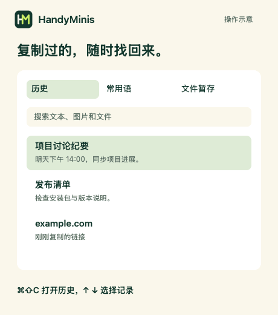

Mac 怎么找回之前复制过的内容？
用 HandyMinis 的剪贴板历史在 Mac 上找回之前复制的文本、图片和文件。按 ⌘⇧C 打开历史，搜索并选中需要的记录。

搜索并粘贴旧记录
- 运行 HandyMinis 后，像平常一样用 ⌘C 复制内容。
- 按 ⌘⇧C 打开历史，输入关键词，用方向键选择记录。
- 按回车粘贴到刚才使用的应用，或按 ⌘↵ 只把记录放回剪贴板。自动粘贴需要辅助功能权限。
历史记录保留多少条？
最多保留 40 条文本、图片和文件记录。历史索引与图片合计上限为 64 MiB。达到任一上限时会清理最旧的记录。
历史保存在本机。可以在设置中暂停收集，或从菜单栏清空历史。
开发版：常用语、纯文本粘贴与文件暂存
这些操作适用于开发版。各发行版支持范围见 GitHub 发布说明。
- 在「历史」里选中文本，按 ⌃↵ 存为常用语。也可以在「常用语」分区点击「新建常用语」。
- 选中文本后按 ⇧↵ 以纯文本粘贴，或按 ⌥↵ 打开操作菜单，选择适合的文本清理方式。
- 把文件拖进「文件暂存」，或从「历史」选择文件条目并加入暂存。需要时把暂存文件拖到目标应用。